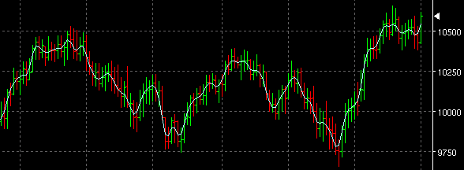

Low Band Pass Filter - LOWPASS

Parameters:
- Color - Plot color
- Line Type - The type of plot to draw
- Label - The text that identifies the plot
- Width - The weighting exponent to alter the bandwidth of the
filter.
- Freq - Adjusts how responsive the filter is to variations in the
input signal.
Description:
LOWPASS is a zero lag low bandpass filter similar to the Jurik
indicator. It uses a Fast Fourier Transform to translate the input to
the frequency domain, applies a low bandpass filter and returns the
filtered signal in the real domain. It is useful a general
indicator similar to a moving average without the attendant lag.
It is extremely useful for smoothing other indicators with a
configurable delay.
There are two input parameters:
Width (0.0 to 0.5) adjusts the weighting exponent to alter the
bandwidth of the filter i.e. the range of points considered by the
filter.
Freq (0.001 to 0.2) (in frequency units) adjusts how responsive the
filter is to variations in the input signal. Experimentation is
suggested to find the best values. (note: if the fractional ranges turn
out to be a problem for users, perhaps a range of arbitrary values
could be mapped into the acceptable ones.)
The FFT routine used was written by Laurent de Soras and freely
available for use (see notes in code).
alt="Back" border="0" height="32" width="32">
border="0" height="32" width="32">